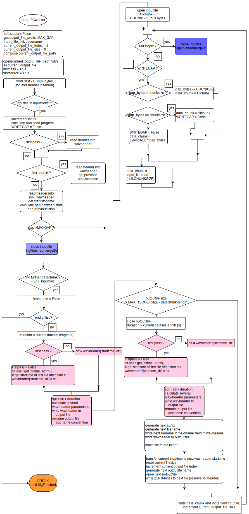

resampler package
Submodules
resampler.resample module
- class resampler.resample.res_workers(*args, **kwargs)
Bases:
QObjectworker class for data streaming thread from PC to STEMLAB object for playback and recording thread :param : no regular parameters; as this is a thread worker communication occurs via
__slots__: Dictionary with entries: __slots__[0]: soxstring Type: str __slots__[1]: return string from sox execution, type : str
‘’’ :raises [ErrorType]: none ‘’’
- return:
none
- rtype:
none
- LO_shifter_worker()
- __init__(*args, **kwargs)
- get_centershift()
- get_expfs()
- get_inputfilelist()
- get_logger()
- get_maxgap()
- get_merge_delorig()
- get_progress()
- get_readoffset()
- get_readsegment()
- get_ret()
- get_sBPS()
- get_sSR()
- get_sfname()
- get_soxstring()
- get_starttrim()
- get_stoptrim()
- get_sttime_atrim()
- get_tBPS()
- get_tfname()
- get_wFormatTag()
- merge2G_worker()
worker for merging all files in system_state[“list_out_files_resampled”]
loops through resampling playlist
2. at each EOF of an input file it checks if there is a timegap between stop time of the current and start time of the next input file if there is a gap < MAXGAP, then this gap is filled with null bytes (no signal), making sure that the lenght of the gapfiller is an integer multiple of 4 (Blockalign) MAXGAP is set by set_maxgap()
After (optional) gap filling different parameters are read from the next wav header (e.g. start/stop times, sampling rates …)
while not EOF: fetch datachunks and write them to current output file until max size of outputfile is reached (currently 2G)
on EOF (inputfile): close file and open next one, goto 2
- if max length MAX_TARGETSIZE is reached:
finalize wav-header of current outputfile,
close current outputfile
rename current outputfile according to name convention and move to target folder
open next outputfile
write 216 null bytes (reserve for header)
goto 2
stopix is set true from outside via the function soxworker_terminate()
:communication with other threads via getters and setters
- Param:
none
- Returns:
none
- set_centershift(_value)
- set_expfs(_value)
- set_inputfilelist(_value)
- set_logger(_value)
- set_maxgap(_value)
- set_merge_delorig(_value)
- set_progress(_value)
- set_readoffset(_value)
- set_readsegment(_value)
- set_ret(_value)
- set_sBPS(_value)
- set_sSR(_value)
- set_sfname(_value)
- set_soxstring(_value)
- set_starttrim(_value)
- set_stoptrim(_value)
- set_sttime_atrim(_value)
- set_tBPS(_value)
- set_tfname(_value)
- set_wFormatTag(_value)
- sox_writer()
- soxworker_terminate()
- SigFinished
- SigFinishedLOshifter
- SigFinishedmerge2G
- SigMergeerror
- SigPupdate
- SigSoxerror
- centershift
- expfs
- inputfilelist
- logger
- maxgap
- merge_delorig
- progress
- readoffset
- readsegmentfn
- ret
- sBPS
- sSR
- sfilename
- soxstring
- starttrim
- stoptrim
- sttime_atrim
- tBPS
- tfname
- wFormatTag
- class resampler.resample.resample_c(resample_m)
Bases:
QObject_methods for resampling (= resampling controller) this class defines a state machine for variable sequences of tasks during several different modes of resampling the class methods communicate via the class variables of the central data class ‘status’ and via signalling. the state machine is defined via the scheduler method which needs to be configured and launched via a signal from the main thread (here the main GUI)
- LOshifter_new()
configures and starts LO shifting thread :param: none :type: none … :raises: none … :return: none :rtype: none
- PupdateSignalHandler()
- Soxerrorhandler(errorstring)
- __init__(resample_m)
- accomplish_resampling()
_after sox-resampling a wav_fileheader is inserted into the resampled dat-File. Afterwards and temporary files are removed this method is called via a signal from the soxwriter worker function sox_writer() after finishing the process communication occurs only via state variables, as this function is called asynchronously on signal emission
self.m[“tgt_wavheader”]: wavheader to be inserted self.m[“new_name”]: name to which the temporary targetfile (targetfilename) should be renamed after processing self.m[“targetfilename”]: complete target file path self.m[“file_to_be_removed”]: temporary file to be removed if it exists
- Param:
none
- Type:
none
… :raises … :return: none :rtype: none
- cancel_resampling()
- checkdiskspace(expected_filesize, _dir)
check if free diskspace is sufficient for writing expeczed_filesize bytes on directory _dir :param: expected_filesize :type: int :param: _dir :type: str … :raises: none … :return: True if enough space, False else :rtype: Boolean
- cleanup()
- Handle the process after either xoxworker or LOSHworker have finished. 2 cases:
- self.m[“emergency_stop”] is set because of ‘cancel’ operation:
terminate all and reset all GUIs reactivate normal state fileopened = false and Relay to all other tabs
- else: (normal operation):
hand over to scheduler by signalling
- Param:
none
- Type:
none
… :raises: none … :return: none :rtype: none
- get_LOvars()
- merge2G_cleanup(input_file_list)
cleanup temp files after merge2G thread has finished :param: none :type: none … :raises: none … :return: none :rtype: none
- merge2G_new(input_file_list)
configures and starts worker for merging all files in system_state[“list_out_files_resampled”] :param: input_file_list :type: list … :raises none … :return: True if successful :rtype: Boolean
- mergeerrorhandler(_str)
- progressupdate_interface()
- res_scheduler()
- resamp_configheader(wavheader, header_config)
inserts fields specified in header_config into wavheader :param: wavheader: dict of type wav_header (see main gui) :type: dict :param: header_config: list of fiels: wFormatTag; data_chkID, sdrtype_chckID, sdr_nChunksize, nBitsPerSample, nBlockalign, readoffset, centerfreq :type: dict … :raises: none … :return: mod_header (format wav_header) :rtype: dict
- resample()
- _generate soxstring from parameters
configurates and starts sox execution thread generates wavheader for the target file to be generated gui: reference to main window object (WizardGUI) target_fn: target filename source_fn: source filename s_wavheader: same type as wavheader produced by SDR_wavheadertools tSR: target sampling rate in S/s tLO: target center freqiency in Hz sys_state: communication dictionary of data class status; accessed only by get and set methods
- Param:
none
- Type:
none
… :raises … :return: target_fn :rtype: string
- schedule_A()
_definition of schedule for simple resampling without LO shift :param: none, communication only via self.m :type: none … :raises none … :return: none :rtype: none
- schedule_B()
_definition of schedule for resampling with previous LO shift do not use for files with BPS = 24bit; use version schedule_B24(self) in that case :param: none, communication only via self.m :type: none … :raises none … :return: none :rtype: none
- schedule_B24()
_definition of schedule for resampling with previous LO shift do not use for files with BPS = 24bit; use version schedule_B24(self) in that case :param: none, communication only via self.m :type: none … :raises none … :return: none :rtype: none
- set_LOvars(_value)
- LOvars
- SigAccomplish
- SigActivateOtherTabs
- SigCancel
- SigConnectExternalMethods
- SigDisconnectExternalMethods
- SigGP
- SigLOshift
- SigProgress
- SigRelay
- SigResampGUIReset
- SigResample
- SigTerminate_Finished
- SigUpdateGUIelements
- Sigincrscheduler
- class resampler.resample.resample_v(gui, resample_c, resample_m)
Bases:
QObject_view methods for resampling module TODO: gui.wavheader –> something less general ?
- GUI_reset_status()
- __init__(gui, resample_c, resample_m)
- addplaylistitem()
- canvasbuild(gui)
sets up a canvas to which graphs can be plotted Use: calls the method auxi.generate_canvas with parameters self.gui.gridlayoutX to specify where the canvas should be placed, the coordinates and extensions in the grid and a reference to the QMainwidget Object generated by __main__ during system startup. This object is relayed via signal to all modules at system initialization and is automatically available (see rxhandler method) the reference to the canvas object is written to self.cref :param : gui :type : QMainWindow :raises [ErrorType]: [ErrorDescription] :return: none :rtype: none
- cb_Butt_resample()
- cb_resample()
_summary_ VIEW: cb of Tab resampler :return: _description_ :rtype: _type_
- cb_split2G_Button()
- enable_resamp_GUI_elemets(status)
enables or disables resampling GUI elements depending on ‘status’: True or False :param [ParamName]: status :type [ParamName]: Boolean … :raises [ErrorType]: none … :return: [ReturnDescription] :rtype: [ReturnType]
- ext_meth_connect(ctrl)
- ext_meth_disconnect(ctrl)
- fillplaylist()
- getCuttime()
calculate trimming values for trimming self.m[“stop_trim”] from the beginning of the first reslist file and stopcut seconds from the beginning of the last reslist file to be passed to the soxstring synthesis (1) get wavheader of the first file and display it on all Tabs (2) get starttime from timeEdit_resample_startcut and write to self.m[“starttrim”] (3) get stoptime from timeEdit_resample_stopcut and write to self.m[“stoptrim”] function is called by cb_resample in the reslist-handler both at the first listelement and the last list element. Function calculates the trimming information for soxstring generation and stores it in self.m[“stop_trim_duration”] and self.m[“start_trim”] :param [ParamName]: none :type [ParamName]: none … :raises [ErrorType]: [ErrorDescription]TODO … :return: [ReturnDescription] :rtype: [ReturnType]
- get_viewvars()
- init_resample_ui()
Resampler VIEW initialization initializes all GUI elements of the Tab resampler TODO: all references are still ‘self’, check ! :param: npne :type: none :raises: none … :return: none :rtype: none
- logfilehandler(_value)
- plot_spectrum_resample(position)
assign a plot window and a toolbar to the tab ‘resample’ and plot data from currently loaded file at position ‘position’ :param : position: fractional position between 0 and 1 :type : int :raises [ErrorType]: [ErrorDescription] :return: flag False or True, False on unsuccessful execution :rtype: Boolean
- read_gain()
- reformat_targetLOpalette()
VIEW Element of Tab ‘resample
- reset_GUI()
VIEW TODO: nach den einzelnen Tabs zerlegen reset GUI elements to their defaults, re-initialize important variables code is executed after new file open :param none :type: none :raises [ErrorType]: [ErrorDescription]TODO :return: True after completion, False if status-yaml not accessible :rtype: boolean
- reset_resamp_GUI_elemets()
reset GUI elements depending which have been checked :param [ParamName]: status :type [ParamName]: Boolean … :raises [ErrorType]: none … :return: [ReturnDescription] :rtype: [ReturnType]
- reslist_itemselected(item)
VIEW show clicked item in resampler list whenever an item is clicked :param: none :type: none … :raises: none … :return: none :rtype: none
- reslist_update()
VIEW updates resampler list whenever the playlist Widget is changed. (1) read self.m (2) generate list of files ‘reslist’ to be resampled from the listWidget for with the files to be resampled (playlist_2) (3) write reslist to system state (4) set self.m[“f1] (file currently operated on) to the first listentry (5) set cutting start and stoptimes from wavheaders of first and last files in the list :param: none :type: none … :raises: none … :return: none :rtype: none
- rxhandler(_key, _value)
handles remote calls from other modules via Signal SigRX(_key,_value) :param : _key :type : str :param : _value :type : object :raises [ErrorType]: [ErrorDescription] :return: flag False or True, False on unsuccessful execution :rtype: Boolean
- selectall_reslist()
selects all items of the resampling sourcelist_2 and moves to the resampling-list in playlist_2 :param: none :type: none … :raises: none … :return: none :rtype: none
- set_viewvars(_value)
- toggle_advanced_sampling()
- Parameters:
[ParamName] (none) – none
… :raises [ErrorType]: [ErrorDescription]TODO … :return: [ReturnDescription] :rtype: [ReturnType]
- toggle_gain()
- Parameters:
[ParamName] (none) – none
… :raises [ErrorType]: [ErrorDescription]TODO … :return: [ReturnDescription] :rtype: [ReturnType]
- toggle_mergeselectall()
gets checkstatus of button for selecting all items of reslist and calls the respective handler :param: none :type: none … :raises: none … :return: none :rtype: none
- unselectall_reslist()
unselects all items of the resampling playlist_2 and moves to the sourcelist_2 :param: none :type: none … :raises: none … :return: none :rtype: none
- updateGUIelements()
updates GUI elements , usually triggered by a Signal SigTabsUpdateGUIs to which this method is connected in the __main__ of the core module :param : none :type : none :raises [ErrorType]: [ErrorDescription] :return: flag False or True, False on unsuccessful execution :rtype: Boolean
- update_resample_GUI()
fills the control elements of the resample GUI with parameters from the wav header RESAMPLER VIEW !! :param [ParamName]: none :type [ParamName]: none … :raises [ErrorType]: [ErrorDescription]TODO … :return: [ReturnDescription] :rtype: [ReturnType]
- updateprogress_resampling()
_duringr sox-resampling the progress of sox resampling is indicated in the progressbar. The active state is indicated by blinking of the label field label_36 this method is called via a signal from the soxwriter worker function sox_writer() repetitively every second communication occurs only via state variables, as this function is called asynchronously on signal emission
system_state[“res_blinkstate”]
- Param:
none
- Type:
none
… :raises … :return: none :rtype: none
- SigActivateOtherTabs
- SigAny
- SigCancel
- SigRelay
- SigUpdateList
- SigUpdateOtherGUIs
- viewvars